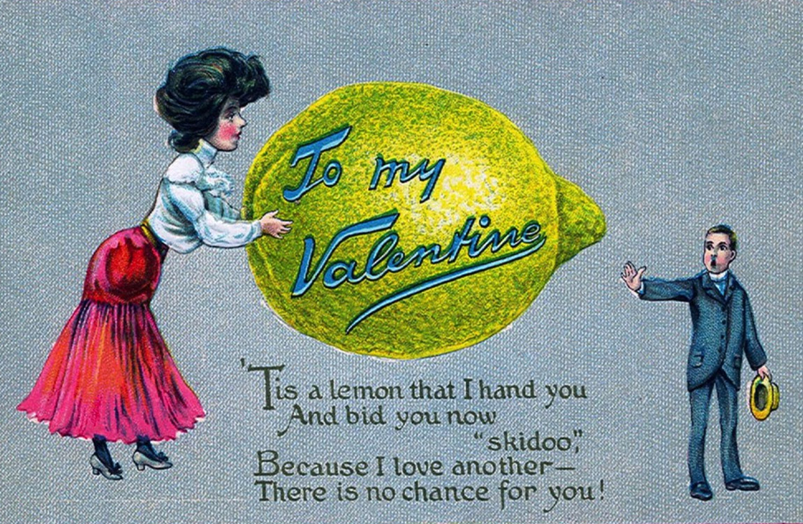

Gandalf werd bijna gespeeld door James Bond

Vroeger kreeg je haatberichtjes op valentijn
South Park makers dagen Scientology uit: klaag ons aan!
Previous
Next
MEEST RECENT
Gandalf werd bijna gespeeld door James Bond
Vroeger kreeg je haatberichtjes op valentijn
Vervangen lichtgevende bomen binnenkort onze lantaarnpalen?
Wij weten hoe een yeti er écht uitziet!
Houdini leerde soldaten ontsnappen uit Duitse handboeien